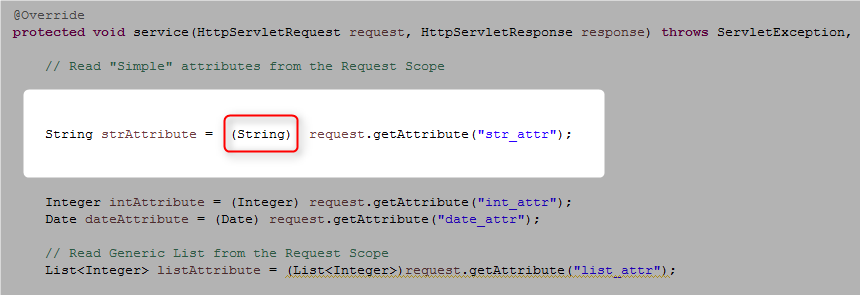

Не публикуй ошибку пока не исправишь ее!
Тезисы:
- Картинка неправильная!
- На ней показан класс каст аттрибута, а надо показывать класс каст параметра запроса
- Идея - параметров запроса и так читаются как строки - нет смысла кастить
- А для аттрибутов нужно создать отдельную ошибку и 2 (ДВА!) упражнения:
- Упражнение-1: Utility-класс с кучей методов, где аттрибуты кастятся под нужный тип
- Упражнение-2: Универсальный Utility-класс, где методов мало, а под какой тип кастить - определяет рефлексия